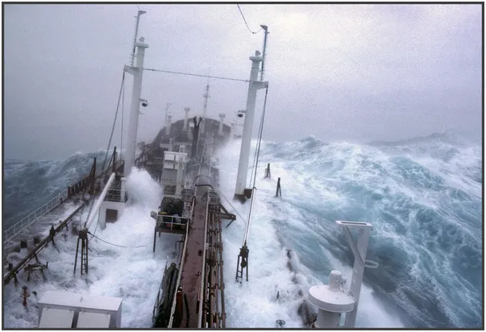
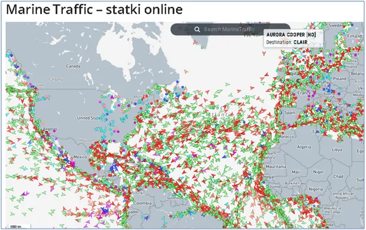
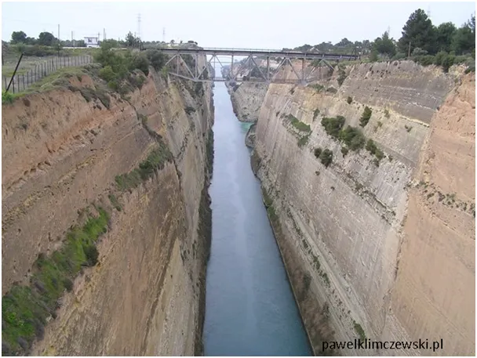
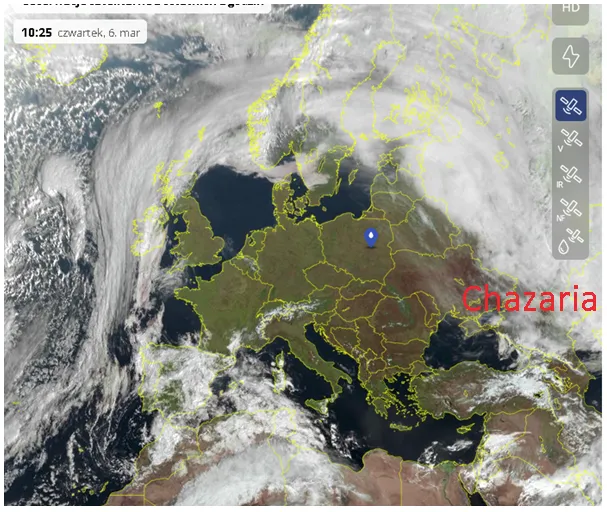

Dynamit w handlu międzynarodowym.
Zwykle dynamiczny marzec rozpostarł nad Europą stabilny wyż co gwarantuje piękną pogodę w najbliższych dniach. Gdy u nas tak uroczo za horyzontem odbywa się jedno z ekstremalnych przedstawień przyrody. W skandynawskie fiordy uderzają blisko 10 metrowe fale, a 6 metrowe są normą na Atlantyku, gdzie odbywa się bardzo nasilony ruch statków handlowych. Transport morski jest ok. 30 razy tańszy od kolejowego, dlatego mocarstwa morskie takie jak Wielka Brytania i USA rozwijały się tak szybko. Wzdłuż zachodniego wybrzeża USA widzimy sznur statków płynących do Kanału Panamskiego, aby opływając kontynent amerykański dotrzeć do wschodniego wybrzeża USA.

W starożytności rozpoczęto budowę Kanału Korynckiego, zaledwie 6 km skały dzieliło zachodnie i wschodnie morza wokół Grecji. Opływanie Peloponezu to strata czasu, czyli pieniędzy i ryzyko. Niestety nawet potęga Rzymu nie skruszyła tej skały. Dopiero współczesny wynalazek dynamitu pozwolił ukończyć budowę.

Pod nadzorem Rzymian kanał kuli ręcznie niewolnicy żydowscy zabrani na roboty po powstaniu żydowskim (lata 66-73). W tym samym czasie Rzymianie zburzyli Jerozolimę gruntownie, a całą ludność żydowską deportowano w odległe zakątki cesarstwa, skąd nigdy nie powrócili. Przez 2000 lat w Palestynie mieszkali głównie Arabowie i Grecy, w tym wielu chrześcijan.

Obecnie te ziemie są im wydzierane siłą przez potomków plemion turkmeńskich, czyli nie semickich, którzy w początkach średniowiecza przeszli hurtem na judaizm. Zamieszkiwali oni wtedy Chazarię, stepy wschodniej Europy między morzami Czarnym i Kaspijskim, tam dziś też trwa wojna.
Paweł Klimczewski